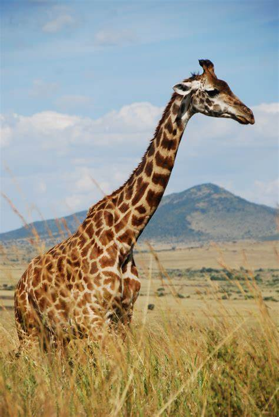
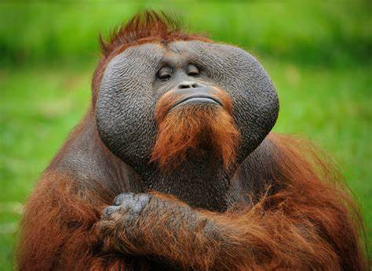
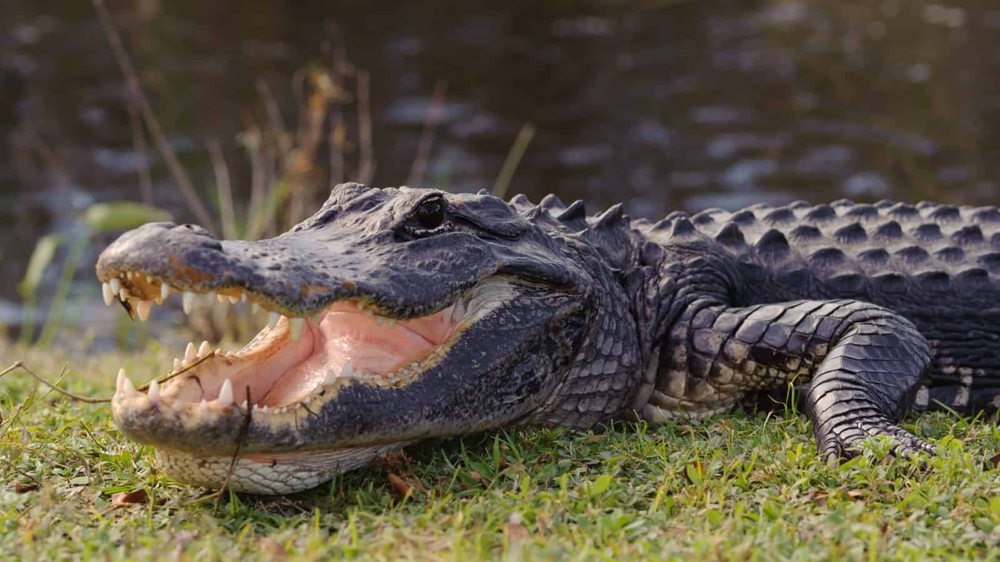

Bears
 Large and heavy mammals that have thick hair, sharp claws,
and plantigrade feet. They evolved from the Miacidae.
Large and heavy mammals that have thick hair, sharp claws,
and plantigrade feet. They evolved from the Miacidae.
- Ollie
- Mona
Giraffes

Worlds tallest living land animal, with a long neck to allow them to eat from
canopies of trees. They evolved from the Ungulate's.
- Frankie
- Cononut
Lions
 Large, powerfully built cat that is only smaller than the tiger.
They evolved from the Proailurus Lemanensis.
Large, powerfully built cat that is only smaller than the tiger.
They evolved from the Proailurus Lemanensis.
- Mella
- Karl
Monkeys

A mammal that contains flat faces, long tails, and live in warm regions. They belong to a group
of primates and evolved from the Prosimian's.
- Cookie
- Earl
- banana Pudding
Alligators

Large carnivorous reptiles, that live in bodies of water such as lakes, swamps, and rivers.
They evolved from the Crocodile's.
- Wren
- Aspen
- Mika